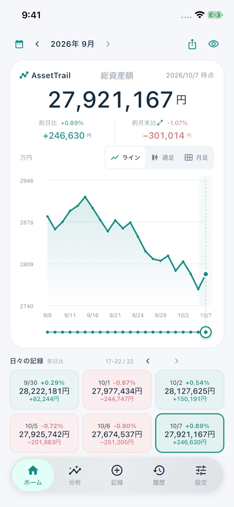
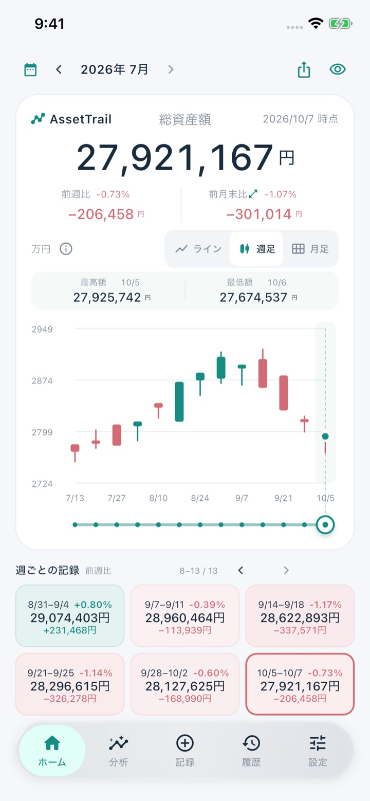
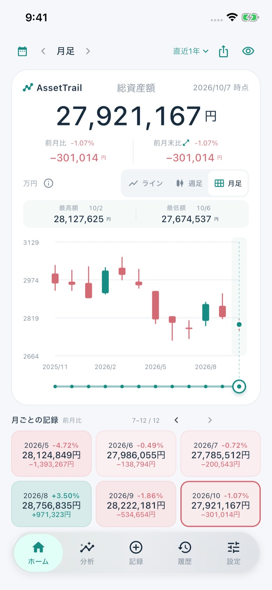
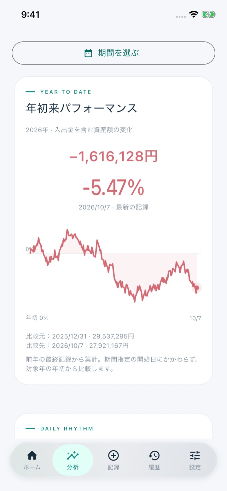
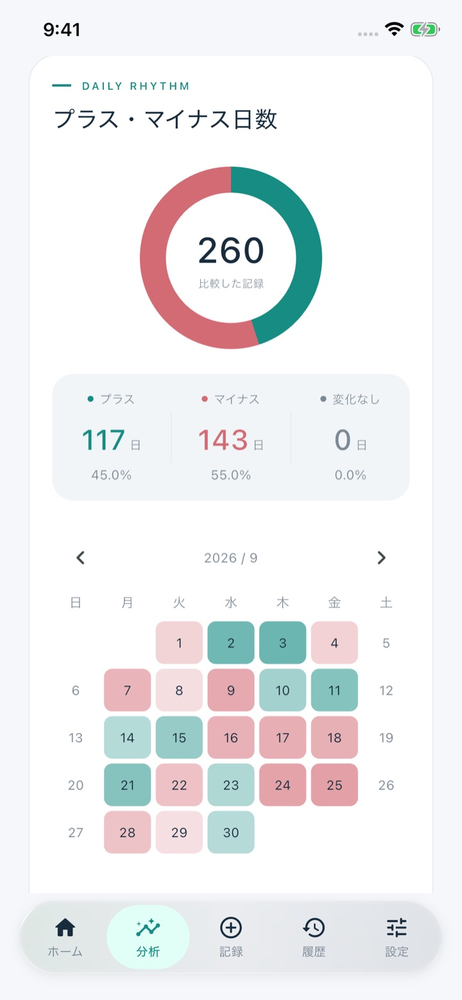

日々の資産記録
1日1件、資産額・入出金・メモを記録。あとから履歴で編集もできます。
その日の総資産額を記録するだけ。日々の記録がグラフになり、資産の増減と流れをシンプルに振り返れます。

ABOUT
銀行や証券口座との連携は不要です。自分で確認した総資産額を残すだけなので、気軽に続けられます。
日付と資産額を入力するだけ。必要に応じて入出金やメモも残せます。
ライン・週足・月足のチャートで、増えた日も減った日も流れとして見えてきます。
前日比・前月末比、下落幅、月ごとの増減から、自分の資産の歩みを確認できます。
FEATURES
続けやすさと見やすさにしぼった、シンプルな資産管理の機能です。
1日1件、資産額・入出金・メモを記録。あとから履歴で編集もできます。
表示を切り替えて、短期の動きも長期の流れも同じ画面で確認できます。
年初来の増減、下落幅、プラス・マイナスの日数、月別の増減、入出金を除いた増減を表示します。
ワンタップで金額を「****」に。人前でアプリを開くときも安心です。
曜日と時刻を選んで通知。その日に記録済みなら通知しません。
起動時や復帰時に、Face ID・Touch IDまたは端末パスコードで認証します。
積立など毎月決まった入金を設定すると、記録の保存時に自動で加算されます。
CSVから過去の記録を取り込み。JSONでバックアップの書き出し・復元ができます。
表示言語と、円・ドル・ユーロ・ポンドの表示通貨を選べます。
※ 表示通貨は単位表示の切り替えで、為替換算は行いません。Plusでは月足、期間指定、日数の円グラフ、月別増減が使え、広告が表示されなくなります。
USE CASES
月に一度、預金や口座の合計を記録。前月末からの差がすぐにわかります。
入出金を記録しておけば、入金分を除いた資産の増減も確認できます。
家族の口座をまとめた合計額を記録して、家計全体の流れを振り返れます。
記録を積み重ねるほど、下落や回復を含めた自分のペースが見えてきます。
SCREENS
余白を活かした落ち着いたデザインで、毎日の記録が負担になりません。ダークモードにも対応しています。




← 横にスワイプ →
※ 実際のアプリ画面です（iPhone）。
PRIVACY
アカウント登録や口座連携は不要。記録はお使いのiPhoneの中に保存されます。
アプリロックを有効にすると、アプリ切り替え時の画面も内容を隠します。
目のボタンで金額や増減額を「****」表示に。比率だけを見ることもできます。
資産額・入出金・メモなどの記録内容を、利用状況の分析ツールへ送ることはありません。
※ 無料版では広告を表示します。アプリを削除すると記録も削除されるため、機種変更の前にはJSONバックアップを書き出してください。
プライバシーポリシーを見るAssetTrail - 資産管理｜iPhone向け・基本無料